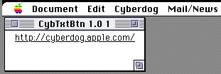
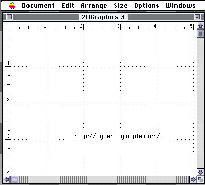
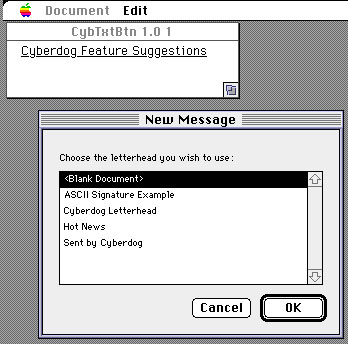

Legacy Document
Important: The information in this document is obsolete and should not be used for new development.
Important: The information in this document is obsolete and should not be used for new development.


About the Sample Cyberdog Button
The sample Cyberdog button is an OpenDoc part that is based onSamplePart, an OpenDoc sample program that is described in the OpenDoc Cookbook. The button part demonstrates the use of the Cyberdog item (CyberItem) and Cyberdog service menu (CyberServiceMenu) classes. It also uses the Cyberdog session class (CyberSession) to open the Preferences dialog box.The button part contains a Cyberdog item, which is opened when the user clicks in the part. The part displays the name of the item. The user can replace the item by dropping another item or text on the part. If text is dropped, the button part assumes the text is a URL and uses the text to create a Cyberdog item. The button part also displays Cyberdog menus.
Figure 3-1 shows an example of the Cyberdog part in its own document window.
Figure 3-1 A Cyberdog item in the button part

The button part initially contains an item for the
http://Cyberdog.apple.com/URL. When the user clicks in the part, the part opens the Cyberdog item associated with the URL.The button part can be embedded in another part. Figure 3-2 shows the button part embedded in a graphics part.
Figure 3-2 The button part embedded in a graphics part

A Cyberdog item representing an e-mail address has been dropped on the button shown in Figure 3-3. The name of the mail item is Cyberdog Feature Suggestions; its URL is
features@Cyberdog.apple.com. The item could have been dragged, for example, out of the Cyberdog notebook or dragged from another e-mail message. When the user clicks in the button part, the mail item opens. The item displays the New Message dialog box as the first step in the sequence of sending mail. After the user chooses the format of the message, the mail service creates an empty message and places the item in the To: field.Figure 3-3 A Cyberdog item for locating a mail address

The following sections show you how to create and use Cyberdog items in an OpenDoc part subclass,
CybTxtBtn, as well as how to support Cyberdog menus and the Cyberdog Preferences dialog box.